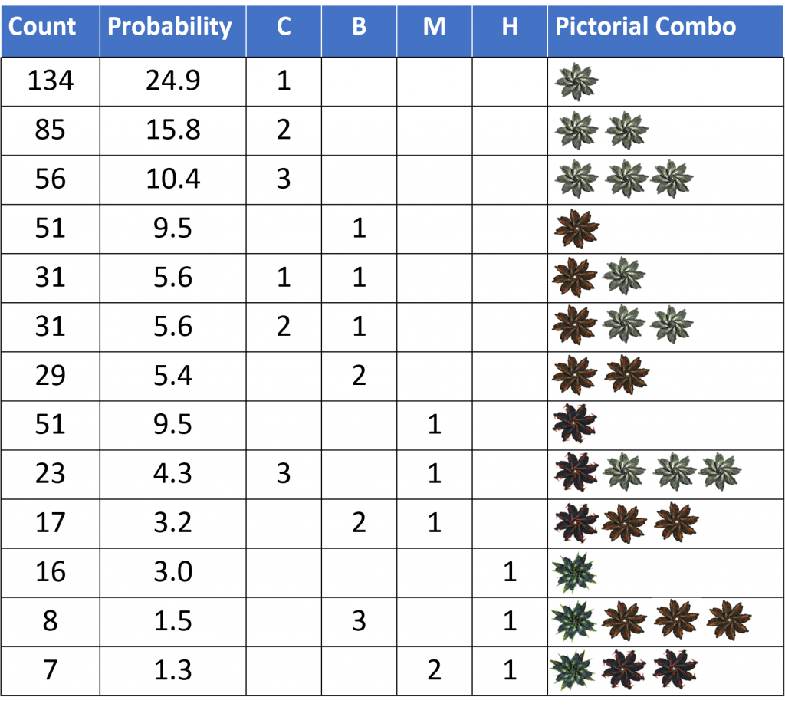

Ever since the Thargoids made their return known in human space in late 3303, commanders have been interdicted directly out of hyperspace by Thargoid Interceptors, a phenomenon that has been called a Hyperdiction by the galactic community [1]. These so-called Hyperdictions have primarily happened in the Pleiades, but over the course of time they have been reported closer to the human bubble and more recently in the Witch Head Sector. Many commanders have reported an increased rate of Hyperdictions in the core Pleiades systems (i.e. within 50 Ly of Merope) since the early part of 3305.
Given the higher rate of Hyperdictions it has now become possible to conduct a meaningful statistical analysis of Hyperdiction phenomena. The goal of this analysis is two-fold:
The nature of this study will evolve as more information is gathered by the Anti-Xeno community.
The experiment consisted of jumping between Celaeno and Asterope and keeping track of the number of jumps and the number of Hyperdictions. Additionally, when experiencing a Hyperdiction, the combination of Interceptors present was recorded. A Krait Phantom was used to jump between the two systems (Build Link: https://s.orbis.zone/4w7d). Since the ship was primarily optimized to dispatch Thargoid Interceptors, a fuel scoop was not equipped and therefore required that the ship be refueled every 50 jumps or so. It should be noted that in the primary experiment the ship was only carrying limpets. A variant of the Krait Phantom build was used to transport 16 units of Meta-Alloys while jumping between Celaeno and Asterope to see if the cargo had any impact on the Hyperdiction rate.
324 jumps between Celaeno and Asterope were carried out with only limpets onboard, and a total of 111 jumps were carried out with 16 units of Meta-Alloys onboard. For purposes of documenting Interceptor combinations, a total of 172 Hyperdictions were documented, some of which were not part of the main analysis.
One final note regarding methodology: after experiencing a Hyperdiction, the subsequent jump to the next system is not counted in the overall statistics. This is because no back-to-back Hyperdictions have ever been observed, so counting the subsequent jump would skew the statistics.
When jumping between Celaeno and Asterope it was found that the Hyperdiction rate is 20.7%. When carrying 16 units of Meta-Alloys, the Hyperdiction rate was measured to be 21.6%, which is statistically the same as the baseline scenario. We can confidently conclude that the Hyperdiction rate in the core Pleiades systems is around 20% and is unaffected by carrying Meta-Alloys. [Update: additionally, hundreds of jumps were later carried out with 64 units of meta-alloys, which did not have an effect on the hyperdiction rate either]
We now turn to the composition of Hyperdiction scenarios, that is, what sort of Interceptors are present to greet a pilot that has been Hyperdicted. The table below shows the combinations of Interceptors that were observed in this study, sorted by Interceptor lethality. A total of 13 unique combinations were observed. [Update: the results below are the result of further documentation of another several hundred hyperdiction instances]

As expected, Hyperdictions containing only one or two Cyclopes are the most common, whereas those containing Hydras are far more rare. Of the 539 documented Hyperdictions, only 31 contained at least one Hydra, with 8 cases containing an additional 3 Basilisks and 7 cases containing an additional pair of Medusae. Currently the statistics in this study are sufficiently high that we can state with confidence that a single, unaccompanied Hydra is more common than one accompanied by other Interceptors. Judging from the data, it appears that 50% of the Hydra instances don’t have additional Interceptors, 25% have 3 Basilisks and another 25% have Medusae. The statistics are still too limited to judge if a Hydra accompanied by 2 Medusae is the rarer of the three possibilities. It is interesting to note that cases that have a Medusa as the ranking Interceptor have an analogous set of (less lethal) cohorts: one case with 3 Cyclopes and another with 2 Basilisks.
No instances with two (unaccompanied) Hydras or two (unaccompanied) Medusae were ever observed. It’s entirely possible that those combinations exist but are simply exceedingly rare and have therefore not been observed yet.
A statistical analysis of Hyperdiction rates was carried out. The content and associated probability of each type of Hyperdiction was carefully documented as well. We can make the following conclusions:
In a futures study, we plan to measure the Hyperdiction rate when carrying Thargoid Technology (i.e. any combination of Thargoid Probes, Sensors, or Links) as well as Guardian Items, such as Relics and Keys.
References
[1] Dr. Strange, “The Thargoids”, https://canonn.science/codex/thargoids/